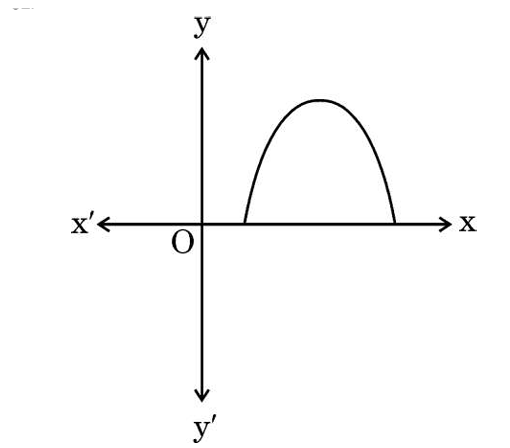
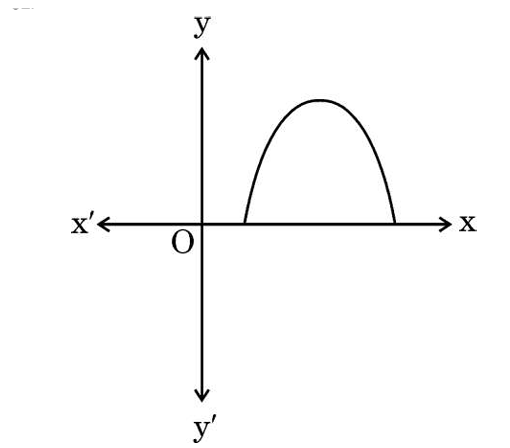

Vardaan Learning Institute
Previous Year Board Question Paper 2025
Set - 30-S
MATHEMATICS (STANDARD)
Class - X
Time: 3 Hours
Max. Marks: 80
General Instructions:
- This Question Paper has 5 Sections A, B, C, D and E.
- Section A has 20 MCQs carrying 1 mark each.
- Section B has 5 questions carrying 2 marks each.
- Section C has 6 questions carrying 3 marks each.
- Section D has 4 questions carrying 5 marks each.
- Section E has 3 case based integrated units of assessment (04 marks each).
SECTION A
1.
The length of the string of a kite flying 50 m above the ground with an elevation of 60° is :
1
2.
There is a square lawn of side 8 m inside a circular park of radius 20 m. Mr. Joseph wants to plant
a sapling in the park.

The probability that he can plant it outside the lawn is :
The probability that he can plant it outside the lawn is :
1
3.
The pair of linear equations
\(9x - 15y + 19 = 0\) and \(5y - 3x - 9 = 0\)
represents two lines which are :
\(9x - 15y + 19 = 0\) and \(5y - 3x - 9 = 0\)
represents two lines which are :
1
4.
A(-4, 5) and C(8, 2) are the two opposite vertices of a parallelogram ABCD. Its diagonals intersect
each other at P(a, b). The relation between 'a' and 'b' is :
1
5.
If the given figure shows the graph of polynomial \(y = ax^2 + bx + c\), then :


1
6.
In the given figure, PQ || SR. The value of x is :

1
7.
The total number of factors of the square of a prime number is :
1
8.
A circle with centre P(4, 5) passes through the point A(0, 9). The length of the diagonal of
the largest square inside this circle is :
1
9.
The \(6^{th}\) term of the AP \(\sqrt{27}, \sqrt{75}, \sqrt{147}, \dots\) is :
1
10.
The numerical value of the area of a circle is equal to that of the perimeter of a
semicircular disc, both having equal radius. The radius is :
1
11.
If the \(23^{rd}\) term of an AP exceeds its \(16^{th}\) term by 21, then the common
difference is :
1
12.
Two dice are thrown simultaneously and the product of the numbers appearing on the tops is
noted. The probability of the product to be less than 6 is :
1
13.
In the given figure, PQ and PR are tangents to the circle such that \(PQ = 7\) cm and
\(\angle RPQ = 60^\circ\).

The length of chord QR is :
The length of chord QR is :
1
14.
If \(\cot \theta = \frac{p}{q}\) \((q \neq 0)\), then \(\sin \theta\) is equal to :
1
15.
Cards numbered 10, 11, 12, ..., 30 are kept in a box and shuffled thoroughly. Rohit draws a
card at random from the box. The probability that the number on the card is a multiple of 4
or 5 is :
1
16.
A and B are sectors of two different circles. Radius of sector A is double of that of sector
B whereas central angle of sector B is double the central angle of sector A. The ratio of
the area of sector A to the area of sector B is :
1
17.
If \(x = p \cos^3 \alpha\) and \(y = q \sin^3 \alpha\), then the value of
\(\left(\frac{x}{p}\right)^{2/3} + \left(\frac{y}{q}\right)^{2/3}\) is :
1
18.
In the given figure, a circle inscribed in \(\Delta ABC\), touches AB, BC and CA at X, Z and
Y, respectively.

If AB = 12 cm, AY = 8 cm and CY = 6 cm, then the length of BC is :
If AB = 12 cm, AY = 8 cm and CY = 6 cm, then the length of BC is :
1
19.
Assertion (A): In the given figure, a toy is in the form of a cylinder
surmounted
by a hemisphere of the same radius. If the radius of the cylinder is 3 cm and its height is
7 cm,
then the volume of toy is \(81\pi \text{ cm}^3\).

Reason (R): Volume of the given solid is the sum of the volume of the cylinder and the volume of the hemisphere.
Reason (R): Volume of the given solid is the sum of the volume of the cylinder and the volume of the hemisphere.
1
20.
Assertion (A): The quadratic equation \(x^2 + 4x + 5 = 0\) has real
roots.
Reason (R): The quadratic equation \(ax^2 + bx + c = 0\), \(a \neq 0\) has real roots if \(b^2 - 4ac \geq 0\).
Reason (R): The quadratic equation \(ax^2 + bx + c = 0\), \(a \neq 0\) has real roots if \(b^2 - 4ac \geq 0\).
1
SECTION B
21.
(a) The perimeter of a sector of a circle of radius 15 cm is 80 cm. Find the area of the
sector.
OR
(b) In the given figure, ABCD is a trapezium with AB || DC. Find the area of the shaded region. (Keep the answer in terms of \(\pi\)).

OR
(b) In the given figure, ABCD is a trapezium with AB || DC. Find the area of the shaded region. (Keep the answer in terms of \(\pi\)).
2
22.
Show that \(14^n\) cannot end with the digit 0 or 5 for any natural number n.
2
23.
(a) If \(\sin(2A + 3B) = 1\) and \(\cos(2A - 3B) = \frac{\sqrt{3}}{2}\), \(0^\circ < 2A + 3B
\leq 90^\circ\), \(A> B\), then find A and B.
OR
(b) From the given figure, find the value of \(\sin \alpha\).

OR
(b) From the given figure, find the value of \(\sin \alpha\).
2
24.
In the given figure, TQ and TR are tangents to the circle with centre O. Prove that \(\angle
QTR = 2
\angle OQR\).

2
25.
In the given figure, Z is a point on the side BC of \(\Delta ABC\) such that XZ || AB and YZ
|| AC.
If XY and CB produced meet at O, then prove that \(ZO^2 = OB \times OC\).

2
SECTION C
26.
A quadrilateral circumscribes a circle. Prove that the opposite sides of the quadrilateral
subtend
supplementary angles at the centre of the circle.
3
27.
Prove that :
\(\frac{\tan^3 \theta}{1 + \tan^2 \theta} + \frac{\cot^3 \theta}{1 + \cot^2 \theta} = \sec \theta \csc \theta - 2 \sin \theta \cos \theta\)
\(\frac{\tan^3 \theta}{1 + \tan^2 \theta} + \frac{\cot^3 \theta}{1 + \cot^2 \theta} = \sec \theta \csc \theta - 2 \sin \theta \cos \theta\)
3
28.
(a) One healthcare center working for the welfare of the patients suffering from 'Dengue',
recorded
the following information :
If the modal age of the patients is 54, then find the value of x.
OR
(b) Weekly expenditure on Ayurvedic medicines of few households in a locality is recorded below.
If the mean expenditure for this is ₹ 211, then find the value of the missing frequency 'y'.
| Age of Patients | Number of Patients |
|---|---|
| 0 - 15 | 8 |
| 15 - 30 | 5 |
| 30 - 45 | x |
| 45 - 60 | 16 |
| 60 - 75 | 12 |
| 75 - 90 | 9 |
OR
(b) Weekly expenditure on Ayurvedic medicines of few households in a locality is recorded below.
| Weekly Expenditure (in ₹) | Number of Households |
|---|---|
| 100 - 150 | 4 |
| 150 - 200 | 5 |
| 200 - 250 | y |
| 250 - 300 | 2 |
| 300 - 350 | 2 |
3
29.
If \(\alpha, \beta\) are the zeroes of the polynomial \(p(x) = x^2 - 2x - 3\), then find a
polynomial where zeroes are \((2\alpha + 3\beta)\) and \((3\alpha + 2\beta)\).
3
30.
Ranjita, Neha and Salma start weaving sweaters at the same time for the children of an
orphan home.
They need 15, 18 and 20 days, respectively, to complete a sweater. After how many days will
all of
them start making a new sweater again ? By that time how many sweaters will have been
competed by
them ?
3
31.
(a) Check graphically whether the pair of linear equations \(2x + 3y = 12; 5x - 3y = 9\) is
consistent. If so, solve it graphically.
OR
(b) A 2-digit number is obtained by either multiplying the sum of the digits by 7 and then adding 3 or by multiplying the difference of the digits by 19 and then subtracting 1. It is given that the digit at ten's place is greater than that of unit's place. Find the 2-digit number.
OR
(b) A 2-digit number is obtained by either multiplying the sum of the digits by 7 and then adding 3 or by multiplying the difference of the digits by 19 and then subtracting 1. It is given that the digit at ten's place is greater than that of unit's place. Find the 2-digit number.
3
SECTION D
32.
(a) The denominator of a fraction is 2 more than the numerator. If 2 is added to both its
numerator
and denominator, then the sum of the new fraction and the original fraction is
\(\frac{46}{35}\).
Find the original fraction.
OR
(b) At present, Sourav's age is 3 years more than the square of his son Ravi's age. When Ravi grows to his father's present age, Sourav's age will be 6 years less than 13 times the present age of Ravi. Find present ages of Ravi and Sourav.
OR
(b) At present, Sourav's age is 3 years more than the square of his son Ravi's age. When Ravi grows to his father's present age, Sourav's age will be 6 years less than 13 times the present age of Ravi. Find present ages of Ravi and Sourav.
5
33.
Find the values of the missing frequencies p and q in the following distribution of 100
observations. The median of the distribution is given as 47.
| Class | 30 - 35 | 35 - 40 | 40 - 45 | 45 - 50 | 50 - 55 | 55 - 60 | 60 - 65 |
|---|---|---|---|---|---|---|---|
| Frequency | 12 | p | 17 | 20 | q | 12 | 8 |
5
34.
(a) From a solid cylinder of height 2.4 cm and radius 0.7 cm, a conical cavity of the same
height
and same radius is hollowed out. Find the volume and total surface area of the remaining
solid.
OR
(b) A carpenter is making a wooden toy (lattu) which is conical in shape and surmounted by a hemisphere. The ratio of the height of the hemisphere and the cone is 3 : 4. If the radius of the cone and the hemisphere is 2.1 cm, find the volume of wood required to make this toy. Also, find the area to be painted after making the toy.
OR
(b) A carpenter is making a wooden toy (lattu) which is conical in shape and surmounted by a hemisphere. The ratio of the height of the hemisphere and the cone is 3 : 4. If the radius of the cone and the hemisphere is 2.1 cm, find the volume of wood required to make this toy. Also, find the area to be painted after making the toy.
5
35.
In the figure, MNOP is a trapezium with, MN || PO and PO = 2 MN.
A line segment FE drawn parallel to MN intersects MP at F and NO at E such that \(\frac{NE}{EO} = \frac{3}{4}\). Diagonal PN intersects FE at X. Prove that 7 FE = 10 MN.

A line segment FE drawn parallel to MN intersects MP at F and NO at E such that \(\frac{NE}{EO} = \frac{3}{4}\). Diagonal PN intersects FE at X. Prove that 7 FE = 10 MN.
5
36.
Case Study - 1
In the month of September, villagers of Ankurhut were falling ill with high temperature. Paracetamol was one of the highest sold medicines during that phase. A survey was conducted to estimate the overall sale of Paracetamol of each pharmacy during the last 7 days. It was observed that the number of Paracetamol sold in different shops were all 3-digit numbers, divisible by 13, taken in order.

Based on the information given above, answer the following questions :
(i) How many Paracetamols were sold by the 7th pharmacy ?
(ii) What was the difference between the number of Paracetamols sold by the 14th and the 9th pharmacy ?
(iii) (a) How many Paracetamols were sold by the 9th pharmacy from the last ?
OR
(iii) (b) What was the total number of Paracetamols sold in that week ?
In the month of September, villagers of Ankurhut were falling ill with high temperature. Paracetamol was one of the highest sold medicines during that phase. A survey was conducted to estimate the overall sale of Paracetamol of each pharmacy during the last 7 days. It was observed that the number of Paracetamol sold in different shops were all 3-digit numbers, divisible by 13, taken in order.
Based on the information given above, answer the following questions :
(i) How many Paracetamols were sold by the 7th pharmacy ?
(ii) What was the difference between the number of Paracetamols sold by the 14th and the 9th pharmacy ?
(iii) (a) How many Paracetamols were sold by the 9th pharmacy from the last ?
OR
(iii) (b) What was the total number of Paracetamols sold in that week ?
4
37.
Case Study - 2
Trees act as the natural filters. By planting trees in and around school premises, we create cleaner and healthier air for students and local residents, reducing respiratory problems. A school in Noida has proposed and organised a community drive on tree plantation under the title "Save Earth, Plant Trees". Students of that school have planted saplings in the field such that it formed a quadrilateral as shown in the figure ABCD.

Based on the information given above, answer the following questions :
(i) Find the distance between the two saplings at A and D.
(ii) (a) One student plants one sapling at the mid-point of AD. Then he moves along a straight line parallel to DB and sows another sapling on AB. What are the coordinates of the positions of these two new saplings ?
OR
(ii) (b) A new sapling is kept at a point M on DB such that DM : MB = 3 : 1. Find the coordinates of M.
(iii) The line segments AC and BD bisect each other at P(-2, 2). Find the coordinates of C.
Trees act as the natural filters. By planting trees in and around school premises, we create cleaner and healthier air for students and local residents, reducing respiratory problems. A school in Noida has proposed and organised a community drive on tree plantation under the title "Save Earth, Plant Trees". Students of that school have planted saplings in the field such that it formed a quadrilateral as shown in the figure ABCD.
Based on the information given above, answer the following questions :
(i) Find the distance between the two saplings at A and D.
(ii) (a) One student plants one sapling at the mid-point of AD. Then he moves along a straight line parallel to DB and sows another sapling on AB. What are the coordinates of the positions of these two new saplings ?
OR
(ii) (b) A new sapling is kept at a point M on DB such that DM : MB = 3 : 1. Find the coordinates of M.
(iii) The line segments AC and BD bisect each other at P(-2, 2). Find the coordinates of C.
4
38.
Case Study - 3
The International Kite Festival takes place every year on 14th January. The main attractions of the festival include national and international Kite Flyers' Parade, kite flying, traditional stalls etc. On this day, few kite flyers, had assembled at a point 'O' on the ground. The position of 3 kites A, B, C was such that A and B were at the same vertical height of 40 m from the ground level. The angles of elevation of A, B and C from O were 60°, 45° and 30° respectively. A vertical tower, SD has been erected at point S and a camera is set at the top of the tower for photography.

Based on the information given above, answer the following questions :
(i) What is the length of the string of the kite at A ?
(ii) If the length of the string of kite at C is 40 m, then find the height of that kite C from the ground.
(iii) (a) What is the horizontal distance between the kites at A and B ?
OR
(iii) (b) If the angle of depression of the kite at A is 30° from the camera at D and the distance between A and D is 60 m, then find the height of the tower.
The International Kite Festival takes place every year on 14th January. The main attractions of the festival include national and international Kite Flyers' Parade, kite flying, traditional stalls etc. On this day, few kite flyers, had assembled at a point 'O' on the ground. The position of 3 kites A, B, C was such that A and B were at the same vertical height of 40 m from the ground level. The angles of elevation of A, B and C from O were 60°, 45° and 30° respectively. A vertical tower, SD has been erected at point S and a camera is set at the top of the tower for photography.
Based on the information given above, answer the following questions :
(i) What is the length of the string of the kite at A ?
(ii) If the length of the string of kite at C is 40 m, then find the height of that kite C from the ground.
(iii) (a) What is the horizontal distance between the kites at A and B ?
OR
(iii) (b) If the angle of depression of the kite at A is 30° from the camera at D and the distance between A and D is 60 m, then find the height of the tower.
4